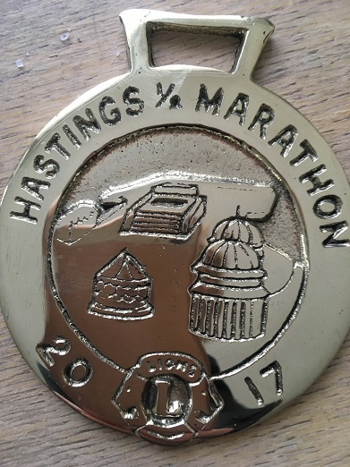
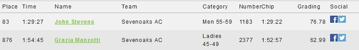

John Stevens was first M55 at the Hastings Half Marathon on 19 March. Grace Manzotti was also running - the only other SAC runner at the event - and she provided the following report:
"Grace Manzotti and John Stevens ran the 33rd Hastings Half Marathon. Hastings is very hilly, the first half is pretty much all uphill and then there are

more hills in the second half too, but you then it goes down to the sea front and the last 2.5 miles are on the sea front which is lovely. Well today there was a very strong headwind by the sea front and it slowed me right down. I had to put my head down and run to the to the finish, still I am very pleased with my time as I got a PB, I ran 3 minutes faster than last time. I think this race is hard but I would recommend it, the crowd support is amazing, everybody is out cheering us on. And there are lots of bands around the course, today they had a Dolly Parton tribute act on the seafront, which took my mind off the wind. You get a brass instead of a medal and this years brass is lovely it celebrates the reopening of the Hastings Pier after it caught fire in 2010."
The duo's results were as follows:

The full results are here.